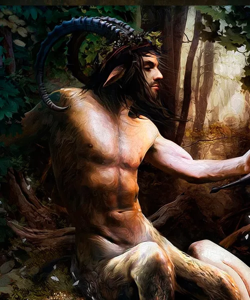
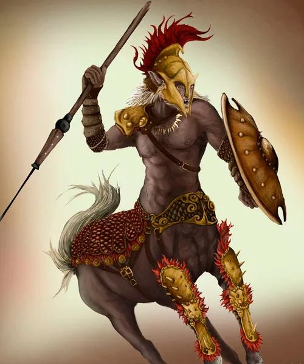
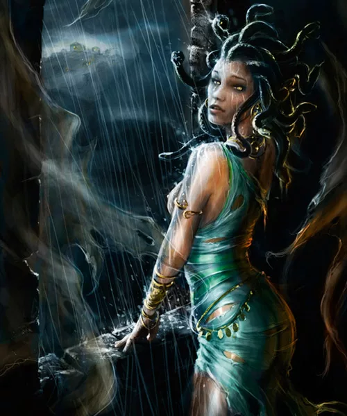
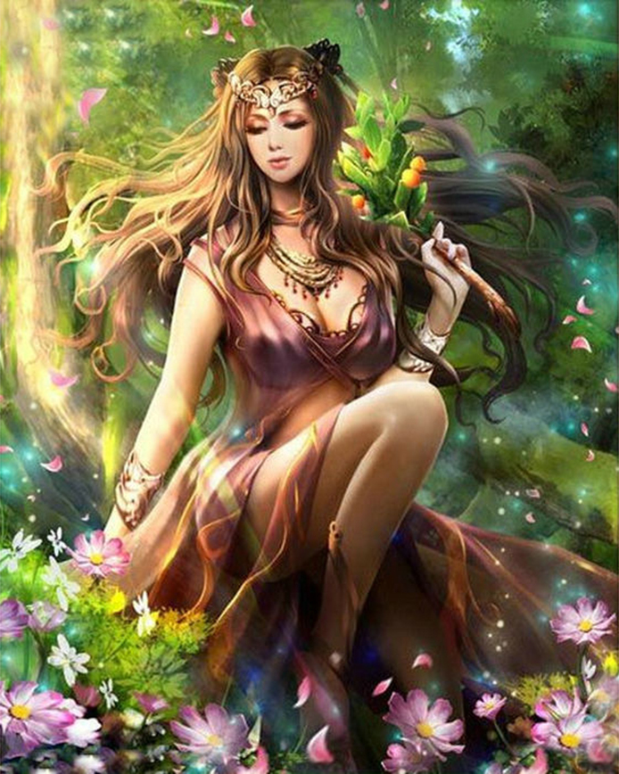
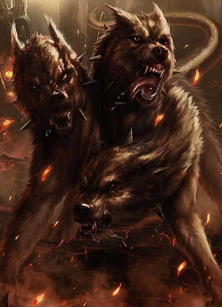

|  |
Sátiro |
Divindade da Natureza |
|
| ser da natureza, com a parte de cima do corpo de um humano e a metade de baixo de um bode. |
|  |
Centauro |
Homem-Cavalo |
|
| Ser metade homem, metade cavalo, eram seres muito poderosos, simbolo da força e instinto animal. |
|  |
Górgonas |
Mulher-Serpente |
|
| Monstros ferozes com aparência feminina que no lugar de cabelos tinham cobras e com poder de petrificar ao olhar. |
|  |
Ninfas |
Espiritos Naturais |
|
| Espíritos da natureza com aparência feminina, ligadas seja a um elemento ou a um local a depender da ninfa. |
|  |
Cerbero |
Guardião dos Infernos |
|
| Cão de três cabeças que guarda a entrada do submundo, que deixa que todas as almas entrem mas nunca que elas saiam. |